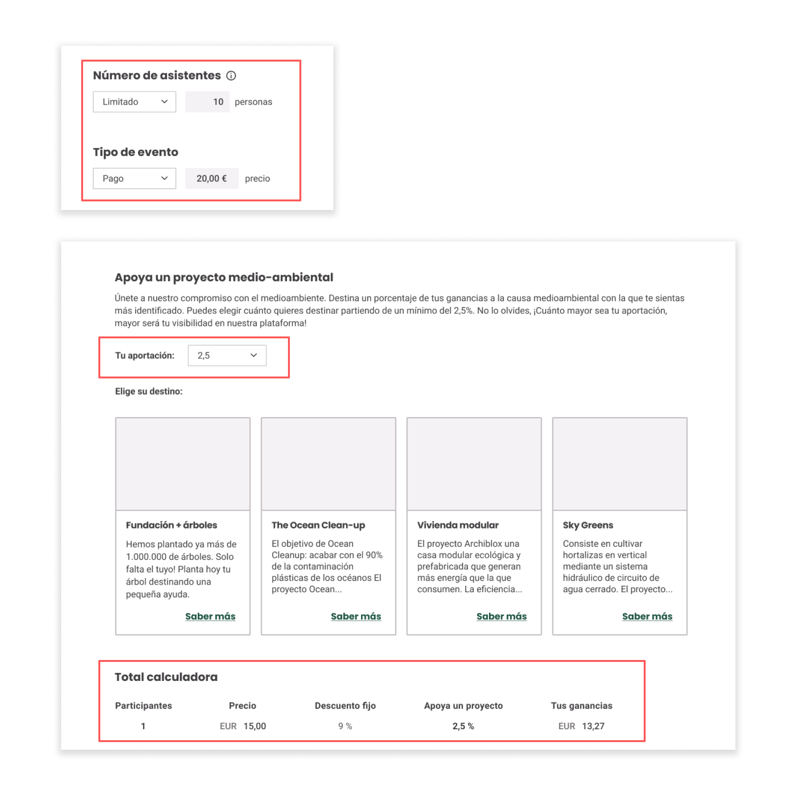

Date: March 2021
Hiklub | Connecting Experiences
Team: Andrea Franco, Carles Núñez
Role: Researcher, UX Designer, UI Designer
For the final Ironhack project (Part time UX/UI Design) I had the pleasure of working with such talented colleagues as Andrea Franco and Carles Núñez. Besides the excitement of finishing this intense course we had the added pressure of working for a real client. The brief was very demanding and it was impossible to do it in just one month, so we decided to focus on a specific flow, "the event creation".
What was our plan?
We decided to provide the user with two modes of engagement to search their BA. One mode was a search bar, and the second mode was through filters [ Family → Category → BA ].
1. Hiklub
Hiklub is a startup that seeks to become the reference platform for active tourism activities.It wants to provide a space to create and share experiences among like-minded people and for this purpose it offers an affinity test that allows matches.
2. Research
In order to understand the difficulties of event creation, we conducted an interview to 7 event creators, both professional and non-professional. Different problems appeared that we categorized for a better understanding. We found that these difficulties were common to all of them.
But we noticed that we needed to go a little deeper and we conducted a second interview to confirm a hypothesis. That's how we found our umbrella insight: Event creators don't know where to start!
3. Unique selling proposition
The positioning of Hiklub in the market was not clear in the environments where it was found; so we decided to clearly define these three unique selling propositions that would be present in the product
These three points differentiated us from the platforms that already existed in the market and make us more appealing to users.
4. Product Proposal
We started the definition of the product by establishing the main blocks of information that we were going to offer to the user, taking into account our main objective, which was to accompany the user in each step of the creation of the event, so that he/she would not feel lost at any time.
To help us to better understand the product, we performed a user flow.
The next step was to define the Jobs to be done and the uses cases. Finally, we performed a MOSCOW to assess which features would be in the final product depending on their importance, time taken and effort.
5. Creative Core Concept
We defined a central creative concept that would transmit nature, a modern nature. Blue and green will be used and for the images we would always look for people enjoying nature to encourage users to be part of these activities. Transparency was a concept we wanted to convey, as it was closely linked to the brand's vision.

6. High-Fidelity & Prototype
After testing with 6 users we found things that could be better: Ôªø5/6 users did not read the explanation we provided before starting. This was very important because we talked about the visibility tool, the suggestions and the commission that the platform had for paid events in addition to a minimum 2.5% donation for the environmental cause selected by the user. We solved it by proposing the info as an onboarding divided on three blocks, we reduced the texts and made it more digestible, it was important for the platform, for us and for the users the transparency.

6/6 users did not click on the "i" tool; they related it to system information and not to the possibility of receiving data that would help them with visibility; so we decided to change the icon with a cup to relate it to an award, "we will reward you with visibility". We also made it look more like a button to encourage people to click it.
5/6 users found themselves lost on the payment page, because they had not read the first information they did not understand the 9% commission and the minimum donation of 2.5%. The way we solved this problem was to create a kind of calculator in which they would fill in the inputs of attendees to the event, the price of the event, the donation they wanted to make and this, would calculate the earnings after taking the commission of the platform. Once again we showed transparency as an attribute of the brand and the platform.
You can see a full prototype in the video down below to understand better the interaction and sequence of screens. It will be great if you check it out and let me know your thoughts.
7. Next Steps
As next steps we have to test with users to verify that the improvements are optimal; in addition we will have to work on the individual and group chat to make possible the communication between the event creator and the participants. And finally, to finish with this flow, the dashboard, its content and actions must be defined.
8. Happy Ending
We were super happy with the final result of the project, we presented it to the client and it was a success!. As a result they proposed us an interview and I can tell you that I am currently working in HiKlub üòÅ, so soon you will be able to see more improvements of this beautiful project. Thanks for reading!
Ready to start a project?
Reach out and let's make it happen.